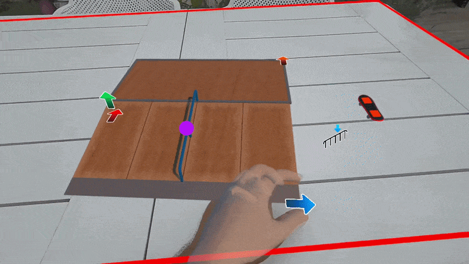

Fase 01
Direct interaction
The player controls the virtual skateboard directly with their hands. Finger-scale contact replaces conventional buttons and controllers, keeping the interaction close to the gestures of physical fingerboarding.
Picking up the board, positioning the fingers and attempting a trick all happen in the same mixed reality space, without switching interaction modes.